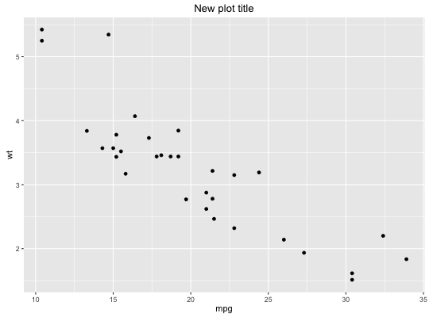
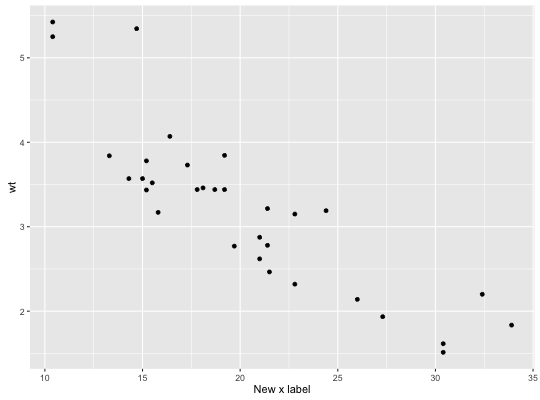
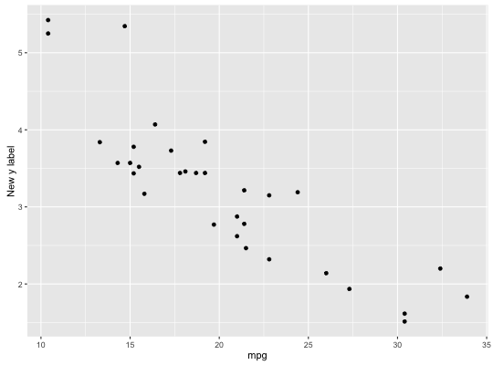
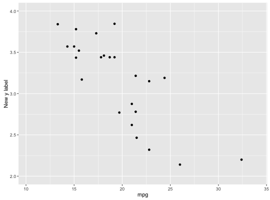
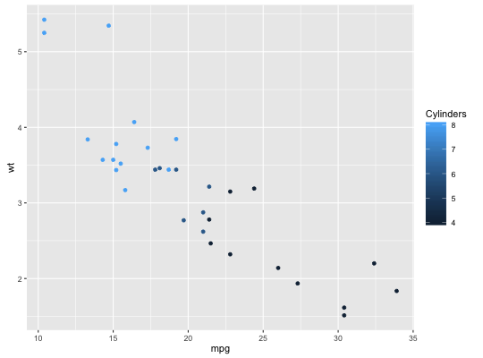
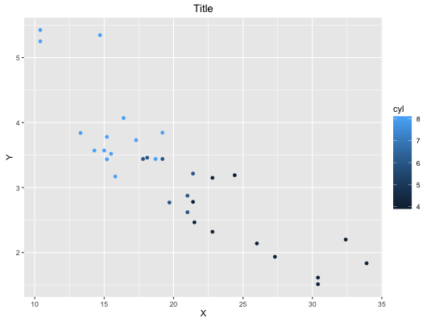

labs(...)xlab(label)ylab(label)ggtitle(label)
Change axis labels and legend titles
p <- ggplot(mtcars, aes(mpg, wt)) + geom_point() p + labs(title = "New plot title")
p + labs(x = "New x label")
p + xlab("New x label")p + ylab("New y label")
p + ggtitle("New plot title")# This should work independently of other functions that modify the # the scale names p + ylab("New y label") + ylim(2, 4)Warning message: Removed 8 rows containing missing values (geom_point).
p + ylim(2, 4) + ylab("New y label")Warning message: Removed 8 rows containing missing values (geom_point).# The labs function also modifies legend labels p <- ggplot(mtcars, aes(mpg, wt, colour = cyl)) + geom_point() p + labs(colour = "Cylinders")
# Can also pass in a list, if that is more convenient p + labs(list(title = "Title", x = "X", y = "Y"))